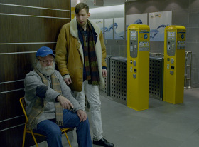

Man mÜsste RÄuber sein, oder zumindest Sprengmeister
You Would Have to Be a Robber or at Least a Demolitions Expert
Jan Bachmann
Deutschland / Schweiz 2014
25 min – HD – deutsch. OmeU
Konzept: Jan Bachmann – K: Matilda Mester, Anges Pakozdi, Jan Bachmann – SD: Jan Bachmann, Carl Schilde – S: Jan Bachmann
P: dffb – Mit Aleksandre Kaberidze, Beniamin Forti, Julian Radlmaier, Tatjana Kononenko, Jan Bachmann
"In einem durchkapitalisierten Stadt- und Landraum beschränken sich die Gestaltungsmöglichkeiten eines kapitallosen Menschen auf seinen Vimeo-Account. Zumindest so lange er sich an die Gesetze hält. Eine Gruppe von Räubern will jedoch die Lethargie durchbrechen und eine Bank ausrauben. Doch die Zeit vergeht und nichts scheint wirklich zu funktionieren. Man bewegt sich ziellos durch Räume, verkauft Elektronikartikel oder versucht sich in der Entwicklung von iPhone-Apps um überleben zu können. Der Durchbruch scheint schon unmöglich – da beginnt sich der filmische Raum aufzulösen." – Jan Bachmann
samstag 10 okt 20.30 uhr werkstattkino
Jan Bachmann geb. 1986 in Basel, Schweiz. Derzeit Studium an der Deutschen Film- und Fernsehakademie Berlin. Regie bei diversen Kurzfilmen. Daneben tritt er immer wieder auch als Darsteller auf. MAN MÜSSTE RÄUBER SEIN… wurde auf der Woche der Kritik Berlin uraufgeführt.